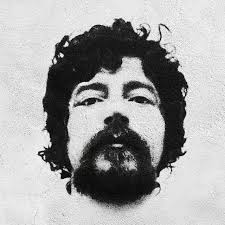

Raul Seixas (1945–1989) foi um dos maiores nomes do rock brasileiro e uma figura marcante da música popular do Brasil. Conhecido como "Maluco Beleza", misturou rock, baião, blues e filosofia em letras irreverentes, críticas e espirituais.
Raul Santos Seixas nasceu em 28 de junho de 1945, em Salvador. Desde jovem se interessou pelo rock americano, especialmente por artistas como Elvis Presley e Little Richard.
Nos anos 1960, formou a banda Os Panteras, inspirada pelo rock internacional. Mais tarde mudou-se para o Rio de Janeiro, onde trabalhou como produtor musical.